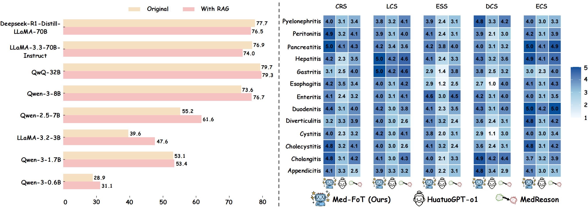
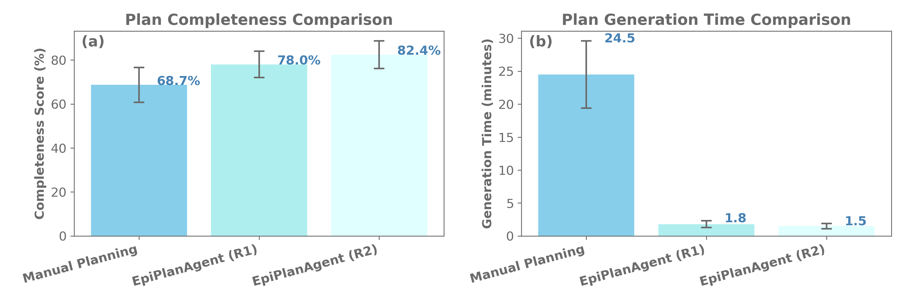
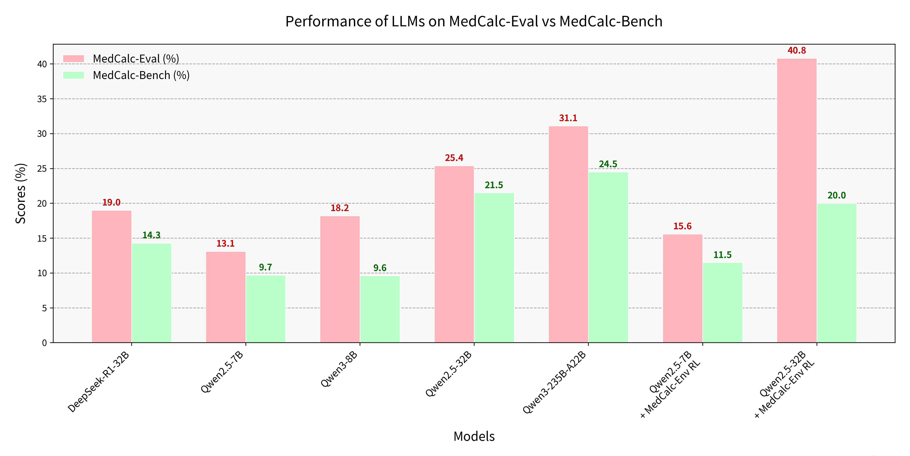

Projects using SigmaFlow
Med-FoT
Based on the SigmaFlow framework, we propose a clinically diagnostic workflow for 15 abdominal diseases, enabling LLMs to achieve accurate and efficient medical reasoning in complex diagnostic scenarios. By using the intermediate process data in the workflow, we constructed high-quality long-form CoT data and developed a new model, Med-FoT, which is capable of performing complex reasoning tasks. We evaluated the performance of Med-FoT on 15 abdominal diseases diagnostic tasks, demonstrating its superior performance compared to existing methods. Double-blind evaluation by two board-certified physicians confirms that its FoT rationales faithfully mirror authentic clinical reasoning.
EpiPlanAgent
Epidemic response planning is essential yet traditionally reliant on labor-intensive manual methods. This study aimed to design and evaluate EpiPlanAgent, an agent-based system using large language models (LLMs) to automate the generation and validation of digital emergency response plans. The multi-agent framework integrated task decomposition, knowledge grounding, and simulation modules. Public health professionals tested the system using real-world outbreak scenarios in a controlled evaluation. Results demonstrated that EpiPlanAgent significantly improved the completeness and guideline alignment of plans while drastically reducing development time compared to manual workflows. Expert evaluation confirmed high consistency between AI-generated and human-authored content. User feedback indicated strong perceived utility. In conclusion, EpiPlanAgent provides an effective, scalable solution for intelligent epidemic response planning, demonstrating the potential of agentic AI to transform public health preparedness.
MedCalc-Eval & MedCalc-Env

As large language models (LLMs) enter the medical domain, most benchmarks evaluate them on question answering or descriptive reasoning, overlooking quantitative reasoning critical to clinical decision-making. Existing datasets like MedCalc-Bench cover few calculation tasks and fail to reflect real-world computational scenarios. We introduce MedCalc-Eval, the largest benchmark for assessing LLMs' medical calculation abilities, comprising 700+ tasks across two types: equation-based (e.g., Cockcroft-Gault, BMI, BSA) and rule-based scoring systems (e.g., Apgar, Glasgow Coma Scale). These tasks span diverse specialties including internal medicine, surgery, pediatrics, and cardiology, offering a broader and more challenging evaluation setting. To improve performance, we further develop MedCalc-Env, a reinforcement learning environment built on the InternBootcamp framework, enabling multi-step clinical reasoning and planning. Fine-tuning a Qwen2.5-32B model within this environment achieves state-of-the-art results on MedCalc-Eval, with notable gains in numerical sensitivity, formula selection, and reasoning robustness.
